UDN
Search public documentation:
TerrainEditorUserGuideKR
English Translation
日本語訳
中国翻译
Interested in the Unreal Engine?
Visit the Unreal Technology site.
Looking for jobs and company info?
Check out the Epic games site.
Questions about support via UDN?
Contact the UDN Staff
日本語訳
中国翻译
Interested in the Unreal Engine?
Visit the Unreal Technology site.
Looking for jobs and company info?
Check out the Epic games site.
Questions about support via UDN?
Contact the UDN Staff
터레인 에디터 사용 안내서
문서 변경내역: Scott Sherman 작성. Richard Nalezynski 관리
개요
터레인 에디터 열기
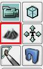
터레인 에디터 인터페이스
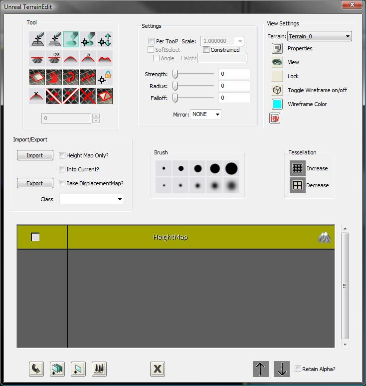
그림 1: TerrainEdit 대화 상자
| 1 | 툴? |
| 2 | 세팅? |
| 3 | 뷰세팅? |
| 4 | 임포트\익스포트? |
| 5 | 브러시? |
| 6 | 테셀레이션? |
| 7 | 브라우저창? |
| 8 | 하단버튼? |
툴

그림 2: 툴 블록 다음과 같은 도구를 사용할 수 있습니다(왼쪽에서 오른쪽, 위에서 아래 순서).
Add/Remove Sectors
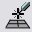
이 도구는 어떤 방향으로나 기존 지형에 섹터를 추가 또는 제거합니다. 이 도구는 MaxTesselationLevel 패치 추가/제거로 한정됩니다. 추가/제거하려면 커서로 패치 크기를 움직여야 합니다. CTRL과 마우스 왼쪽 버튼을 클릭하면 섹터 추가를 위한 도구가, 마우스 오른쪽 버튼을 클릭하면 섹터 제거를 위한 도구가 시작됩니다. 버튼을 누른 채로 끌어가면 추가/제거될 패치의 윤곽이 중첩됩니다. 추가된 패치는 녹색 중첩으로 표시되며 제거된 패치는 빨강색으로 표시됩니다. 버튼을 놓으면 패치가 추가/제거되고 필요 시 차이점 적용을 위해 지형 위치가 오프셋됩니다.
Add/Remove Polygons

이 도구는 현재 사용할 수 없습니다.
Paint
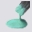
선택 시 Ctrl과 마우스 왼쪽 버튼을 누르면 지형의 선택된 레이어를 '채색'합니다. CTRL과 마우스 오른쪽 버튼을 누르면 채색이 취소됩니다(레이어 제거). 레이어 브라우저에서 높이 맵을 선택한 경우 Ctrl과 마우스 왼쪽 버튼을 클릭하면 지형의 높이가 상승하고 마우스 오른쪽 버튼을 클릭하면 높이가 낮아집니다. 별개인 지형 가장자리를 맞추기 위해 지형 전체 채색이 지원됩니다.
Vertex Paint

선택 시 이 도구를 통해 직접 정점을 선택하고 상하로 이동하여 에디터에서 정적 메쉬 등과 지형 가장자리를 간편하게 맞출 수 있습니다. 정점을 선택하려면 CTRL과 마우스 왼쪽 버튼을 클릭합니다. 정점을 선택 취소하려면 CTRL과 마우스 오른쪽 버튼을 클릭합니다. 선택/선택 취소 작업은 부가적인 작업으로, 현재 선택한 모든 정점을 취소하려면 CTRL-ALT-SHIFT와 마우스 오른쪽 버튼을 클릭합니다. 선택한 정점을 이동하려면 CTRL-ALT와 마우스 왼쪽 버튼을 클릭하고 마우스를 위 또는 아래로 이동합니다. 세팅 상자에서 'SoftSelect' 옵션을 선택한 경우 정점 선택/선택 취소가 100% 도구의 가운데 원 안에 있게 되며 최소에서 최대 반경으로 가중치가 축소되면서 감소반경 내 정점이 선택됩니다. 100%에서 선택된 정점 위에는 흰색 공 모양이 표시되며 가중치가 0으로 줄어들면서 색상도 검게 흐려집니다. SoftSelect를 선택하지 않은 경우 도구 원을 완전히 포함하는 정점이 선택됩니다(즉 두고 원 주변의 사각형이 100%에서 선택됩니다). Strength 설정을 선택한 정점 가중치 및 마우스 움직임 크기와 곱하여 편집 시 정점을 움직입니다.
Manual Edit
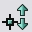
이 도구는 현재 사용할 수 없습니다.
Flatten
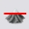
이 도구는 높이 맵 선택 시 Ctrl과 마우스 왼쪽 버튼을 클릭할 때 지형을 지형 높이로 편평하게 합니다. 만약 세팅 섹션의 'Angle' 상자를 선택한 경우 Ctrl과 마우스 왼쪽 버튼 클릭 시 결정한 각도로 지형이 편평해집니다. 또한 'Angle' 상자를 선택 취소하고 세팅 섹션의 'Height' 상자에 값이 있는 경우 지형이 제공된 값으로 편평해집니다.
Flatten Specific

이 도구는 현재 사용할 수 없습니다. 위에서 설명한 것처럼 이 기능은 'Height' 설정을 통해 제공되며 향후 제거될 것입니다.
Smooth

이 도구는 클릭한 중심점 주변으로 지형을 폅니다. 높이 맵 선택 시 높이를 조정합니다. 레이어 선택 시 알파 맵 값을 평활화합니다.
Average

이 도구는 영향 받는 지점을 모든 지점의 평균으로 설정합니다. 높이나 레이어 매핑에 적용 가능합니다.
Noise
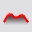
이 도구는 선택한 레이어/높이 맵에 노이즈를 삽입합니다.
Visibility

이 도구는 Ctrl과 마우스 왼쪽 버튼을 클릭했을 때 구멍을 채색하고 마우스 오른쪽 버튼을 클릭했을 때는 구멍을 제거합니다. 디테일을 지형에서 제거할 때 구멍이 사라지는 것을 방지하기 위해 이 도구는 MaxTesselationLevel로 제한됩니다.
Texture Pan

이 도구는 CTRL과 마우스 왼쪽 버튼을 클릭하고 마우스를 끌어갈 때 브라우저 창에 현재 선택된 지형 재질의 텍스처를 패닝합니다. 참고: 현재 이 변경에는 속도를 저하시키는 지형 재질 재컴파일이 필요하므로 지형 재질로 올바르게 전파되지 않습니다. 이러한 값을 변경하려면 당분간 지형 재질 Property 창의 적합한 창에서 직접 값을 설정하는 것이 좋습니다.
Texture Rotate

이 도구는 CTRL과 마우스 왼쪽 버튼을 클릭하고 마우스를 끌어갈 때 브라우저 창에 현재 선택된 지형 재질의 텍스처를 회전합니다. 참고: 현재 이 변경에는 속도를 저하시키는 지형 재질 재컴파일이 필요하므로 지형 재질로 올바르게 전파되지 않습니다. 이러한 값을 변경하려면 당분간 지형 재질 Property 창의 적합한 창에서 직접 값을 설정하는 것이 좋습니다.
Texture Scale

이 도구는 CTRL과 마우스 왼쪽 버튼을 클릭하고 마우스를 끌어갈 때 브라우저 창에 현재 선택된 지형 재질의 텍스처를 확대합니다. 참고: 현재 이 변경에는 속도를 저하시키는 지형 재질 재컴파일이 필요하므로 지형 재질로 올바르게 전파되지 않습니다. 이러한 값을 변경하려면 당분간 지형 재질 Property 창의 적합한 창에서 직접 값을 설정하는 것이 좋습니다.
Lock Vertex
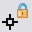
이 도구는 현재 사용할 수 없습니다.
Mark Unreachable
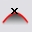
이 도구는 현재 사용할 수 없습니다. 참고: 이 도구는 충돌 최적화를 위해 고안된 것이나 현재까지 그 필요성을 찾지 못했습니다. 현재 충돌 구현에서는 복잡성을 증대할 가능성이 있습니다.
Split Terrain X

이 도구는 현재 선택한 X축을 따라 지형을 분할합니다. 활성화할 경우 노란색 선이 분할 발생 위치를 렌더링합니다. CTRL과 마우스 왼쪽 버튼을 클릭하면 분할이 발생합니다.
Split Terrain Y

이 도구는 현재 선택한 Y축을 따라 지형을 분할합니다. 활성화할 경우 노란색 선이 분할 발생 위치를 렌더링합니다. CTRL과 마우스 왼쪽 버튼을 클릭하면 분할이 발생합니다.
Merge Terrain

이 도구는 제공된 두 인접 지형을 적합하게 일치하도록 병합합니다. 활성화할 경우 노란색 선이 병합 발생 위치를 렌더링합니다. 병합 불가 시 선이 표시되지 않습니다. CTRL과 마우스 왼쪽 버튼을 클릭하면 병합이 발생합니다.
Orientation Flip
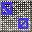
이 도구는 지형 패치의 가장자리 방향을 대칭 이동합니다. Ctrl과 마우스 왼쪽 버튼을 클릭하면 가장자리를 기본 방향의 반대로 대칭 이동하고 마우스 오른쪽 버튼을 클릭하면 가장자리를 기본 방향으로 복원합니다. 가장자리 대칭 이동은 가장 높은 테셀레이션 수준에서만 유효합니다.
세팅

그림 3: Tool 세팅 블록
Per-Tool? 확인란
선택 시 설정이 현재 활성화된 도구에만 적용됩니다.Scale Combo
현재 사용되지 않는 기능입니다.SoftSelect 확인란
선택 시 정점 채색/편집 도구가 정점의 소프트 선택을 활용합니다.Constrained 확인란
선택 시 지형 Editor테셀레이션Level이 0이 아닌 값으로 선택된 경우 편집은 설정된 테셀레이션의 정점에만 영향을 미칩니다. 더 높은 디테일의 정점은 편집된 이웃에 따라 결정된 평면에 부합하게 자동 설정됩니다.Angle 확인란
이 컨트롤은 Flatten 도구가 활성화된 경우에만 사용 가능합니다. 이 시점에서 선택한 경우 Flatten 도구가 도구 활성화 시 결정된 각도를 활용합니다.Height 텍스트 상자
이 컨트롤은 Flatten 도구가 활성화된 경우에만 사용 가능합니다. Angle 옵션을 선택하지 않고 이 상자에 값이 없으면 Flatten 도구가 이 값을 평활화할 높이로 사용합니다.슬라이더/콤보 쌍
다음 브러쉬 설정 각각에 대해 슬라이더/콤보 쌍이 제공됩니다.- Strength
- Radius
- Falloff
Mirror Combo
이 콤보는 특정 지형 도구의 응용 프로그램을 위한 미러링 모드를 선택할 수 있습니다. 도구가 미러링을 지원할 경우 편집 중에 자주색으로 표시된 두 번째 도구 커서가 미러링된 위치에 표시됩니다. 미러 콤보는 다음과 같은 옵션을 포함합니다.| 플래그 | 설명 |
|---|---|
| 없음 | 도구를 미러링하지 않음 |
| X | X축에 대해 미러링 |
| Y | Y축에 대해 미러링 |
| XY | X 및 Y축에 대해 미러링 |
뷰세팅

그림 4: 뷰세팅 블록
Terrain Combo
이 콤보를 통해 모든 현재 지형 액터에서 편집할 지형을 선택할 수 있습니다.Properties버튼
이 버튼을 누르면 현재 선택한 지형의 등록 정보 창을 불러옵니다.View 버튼
'eye'가 있으면 지형이 보기에 나타납니다. 클릭 시 버튼이 '빈' 아이콘으로 변경되며 레벨에서 지형이 숨겨집니다.Lock 버튼
'빈' 아이콘이 있으면 지형을 편집할 수 있습니다. 클릭 시 버튼이 자물쇠 아이콘으로 변경되며 지형이 편집 명령을 전혀 수용하지 않습니다.Wire 버튼
현재 구현되지 않았습니다.Solid 버튼
현재 구현되지 않았습니다.Recompile Materials 버튼
이 버튼을 누르면 현재 지형에 적용된 모든 쉐이더가 다시 컴파일됩니다.Import/Export

그림 5: Import/Export 블록
Import 버튼
높이 맵(16비트 BMP 파일로부터), 레이어 알파 맵(16비트 BMP 파일로부터) 또는 지형(T3D 파일로부터)의 임포트를 제공합니다. 높이 맵을 임포트하려면 'HeightMap Only?' 옵션을 선택하고 Terrain 브라우저에서 높이 맵을 선택해야 합니다. 알파 맵을 임포트하려면 'HeightMap Only?' 및 'Into Current?' 옵션을 선택하고 Terrain 브라우저에서 지형 레이어를 선택해야 합니다.Export 버튼
높이 맵(16비트 BMP 파일로) 또는 지형(T3D 파일로)의 익스포트를 지원합니다. 높이 맵을 익스포트하려면 'HeightMap Only?' 옵션을 선택하고 Terrain 브라우저에서 높이 맵을 선택해야 합니다. 알파 맵을 익스포트하려면 'HeightMap Only?' 옵션을 선택하고 Terrain 브라우저에서 지형 레이어를 선택해야 합니다.Height Map Only? 확인란
선택한 경우 Import/Export 버튼을 누르면 높이 맵에 대해서만 작업이 발생합니다. 지형 브라우저 창에서 레이어를 선택하고 이 확인란을 누른 경우 알파 맵이 임포트/익스포트됩니다.Into Current? 확인란
'Height Map Only?' 확인란과 함께 이 확인란을 선택한 경우 Import 버튼을 누르면 높이 맵이 View Setting Terrain 콤보 상자에서 현재 선택한 지형에 임포트됩니다. 참고: 임포트한 높이 맵은 임포트 대상 지형의 크기와 일치해야 하며 그렇지 않으면 작업이 실패합니다.Bake DisplacementMap 확인란
현재 구현되지 않았습니다.Class Combo
높이 맵 임포트/익스포트에 사용할 팩토리를 결정합니다.브러시
그림 6: Brush 블록 이 컨트롤 블록에서는 사전 설정된 브러쉬 크기를 선택할 수 있습니다. 슬라이더를 사용하여 사용자 지정 값을 설정할 경우 브러쉬 중 하나를 마우스 오른쪽 버튼으로 클릭하고 Brush 버튼의 값을 저장할 수 있습니다. 마우스 커서를 브러쉬 위에 놓고 있으면 툴팁 창에 저장된 설정이 표시됩니다.
테셀레이션

그림 7: 테셀레이션 Control 블록
Increase 버튼
이 버튼을 누르면 현재 지형의 최대 테셀레이션 값이 증대됩니다.Decrease 버튼
현재 구현되지 않았습니다.브라우저창
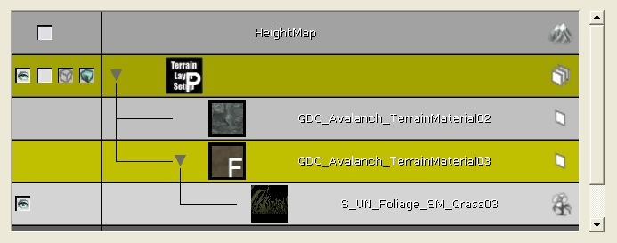
그림 8: Terrain Browser 이 창은 지형을 시각적으로 표시합니다. 이전에 구현한 터레인 브라우저 창과 유사한 방식으로 작동합니다. 상황별 마우스 오른쪽 버튼 메뉴에서는 이 대화 상자 내에서 대부분의 지형 생성 작업을 수행할 수 있는 기능을 제공합니다. 이 브라우저 창에는 Generic Browser에서 선택한 재질로부터 레이어를 자동 생성하는 기능이 새로 추가되었습니다. 선택 시 에디터가 맵 패키지에 저장되는 지형 재질을 자동 생성합니다. 이 때 이름은 TMAT_<선택한 재질 이름>이고 지형 레이어 설정은 TLS_<선택한 재질 이름>으로 생성됩니다. 지형 설정을 간소화하기 위한 목적으로 설계되었습니다.
하단버튼

그림 9: 'Bottom-Bar' 컨트롤 사용 가능한 컨트롤은 다음과 같습니다(왼쪽부터 오른쪽으로).